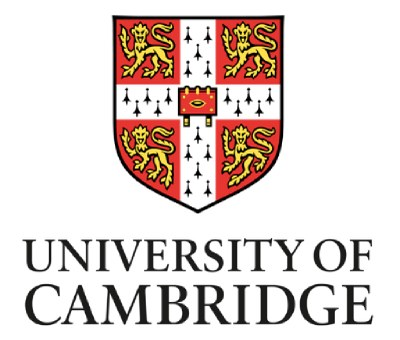

Research Scientist
Samsung AI Center Cambridge
Affiliated Lecturer
Machine Learning Systems Lab, University of Cambridge

From november 2022, I joined the Samsung AI Center in Cambridge as a Research Scientist. I am also an affiliated lecturer at the Cambridge Machine Learning Systems Lab from the University of Cambridge since 2020.
In fact, I am an Associate Professor on leave from the Laboratoire Informatique d'Avignon (LIA) and Avignon Université (FR) (joined in 2020). My research focuses on artificial intelligence through the development of new efficient deep learning methods via self-supervised / representation learning. I am also interested
on the efficiency problematic of large deep learning models alongside with finding elegant solutions to develop new type of neural networks. In this extent,
I investigate different potential solutions including efficient large-scale self-supervised and supervised learning. At the industry level, I work close to problems involving
embedded AI, making speech technologies better and faster for everyone. I created community driven and internationally adopted solutions such as PyTorch-Kaldi and SpeechBrain, two open source toolkits for
speech processing and deep learning entirely written in PyTorch. Finally, I am particularly attached to the concept of AI for Social Good, and I therefore dedicate part of my research time
to solve concrete societal problems, such as the astonishing carbon footprint of modern deep learning models or the open access of the latest technologies to the wide community.
From february to august 2020, I was part of the Oxford Machine Learning Systems (OxMLSys) as a Senior Research Associate working in collaboration with Prof. Nicholas Lane, working on the fundations of the above described topics.
Prior to joining Oxford, I did my PhD thesis at the University of Avignon and the Laboratoire Informatique d'Avignon (LIA) under the supervision of Prof.
Linarès Georges and Assoc. Prof. Morchid Mohamed. The thesis was part of an industrial collaboration (CIFRE) with Orkis, a French company specialised in assets
and data managements. The thesis ended with more than 15 publications in well-known conferences and journals, and released new tools to the research community
to develop and investigate quaternion neural networks in the context of natural language processing and image processing.
During the thesis, I was given the opportunity to spend four months working at the Montréal Institute for Learning Algorithms (MILA), Montréal under the supervision
of Prof. Yoshua Bengio. The collaboration mainly concerned the development of new quaternion convolutional and recurrent neural networks for automatic speech
recognition. This period is also at the origin of long-term and funded projects including Pytorch-Kaldi and SpeechBrain.
Funded Projects
E-SSL: Efficient Self-Supervised Learning for Inclusive and Innovative Speech Technologies (2023 - 2026)
National Research Agency (ANR) — Former Principal Investigator — 469 000€
As a former Associate Professor, I was awarded one of the largest available French grant for innovating in the field of SSL for speech technologies.
More precisely, I was leading a consortium gathering three universities (Avignon University, Université Grenoble-Alpes and PSL Paris) and composed with Prof. François PORTET (LIG), Assoc. Prof. Solange ROSSATO (LIG),
Assoc. Prof. Benjamin LECOUTEUX (LIG), Assoc. Prof. Didier SCHWAB (LIG), Assoc. Prof. Fabien RINGEVAL, Dr., CR, Marco DINARELLI (CNRS, LIG), Prof. Alexandre ALLAUZEN (LAMSADE), Assoc. Prof. Titouan PARCOLLET (LIA), Prof. Yannick ESTÈVE (LIA).
Unfortunately, and as I am currently on leave, I stopped leading this project (Prof. Yannick Estève is the new PI). I am still involved in the project as a PhD student co-adviser as well as an external scientist as my research at Samsung and the University of Cambridge
is highly linked to the topics of this grant. An abstract of the E-SSL project is:
The Speechbrain project (see bellow for mor info) has been granted 500K hours of GPU time in the French datacenter Jean Zay.
This project is a joint collaboration between the Laboratoire Informatique d'Avignon (LIA) , Le Laboratoire de Traitement et Communication de l'Information (LTCI), the Laboratoire des Sciences du Numérique de Nantes (LS2N) and the Laboratoire Interdisciplinaire des Sciences du Numérique (LISN) that aims to support the effort devoted to SpeechBrain towards a democratization of the research and developpement of speech technologies. This project will gather top-tier researchers to build and release state-of-the-art and ground-breaking systems for speech translation, self-supervised learning of speech representations, speaker verification and identification, voice privacy, spoken language understanding, speech synthesis, speech for e-health and speech enhancement.
The consortium is composed with: Assoc. Prof. Titouan PARCOLLET (PI, LIA), Prof. Yannick ESTÈVE (LIA), Prof. Corinne FREDOUILLE (LIA), Prof. Jean-François BONASTRE (LIA), Prof. Richard DUFOUR (LS2N), Prof. Slim ESSID (LTCI), Assoc. Prof. Sahar GANNAY (LISN).
LeBenchmark project has been granted 200K hours of GPU time in the French datacenter Jean Zay.
This project is a joint collaboration between the Laboratoire d'Informatique de Grenoble (LIG) and the Laboratoire Informatique d'Avignon (LIA) that aimed to collect large quantities of raw speech in French (i.e. several thousand hours)
with different styles (read speech, prepared speech, spontaneous speech), from various speakers and use them to learn self-supervised models
to be shared with the research community. Furthermore, we also established a new benchmark data set for several speech processing tasks.
I am in charge of finding the appropriate self-supervised methods (e.g wav2vec) and to deploy it on our new dataset. We released various
[pre-trained models](https://huggingface.co/LeBenchmark) with various training sets acounting for up to 14,000 hours of speech in French. Everything is nicely integrated to SpeechBrain for peoples interested in re-using our models for downstream tasks!
The consortium is composed with: Prof. Laurent BESACIER (PI, LIG), Prof. François PORTET (LIG), Assoc. Prof. Solange ROSSATO (LIG), Assoc. Prof. Benjamin LECOUTEUX (LIG), Assoc. Prof. Didier SCHWAB (LIG), Assoc. Prof. Fabien RINGEVAL, Dr., CR, Marco DINARELLI (CNRS, LIG), Prof. Alexandre ALLAUZEN (LAMSADE), Assoc. Prof. Titouan PARCOLLET (LIA), Prof. Yannick ESTÈVE (LIA).
Models are available on HuggingFace . SpeechBrain: simplify the access to speech technologies (2021 - 2022)
Principal Investigator — 334 000€
LeBenchmark (2020 - 2022)
Co-Principal Investigator for SSL models — 117 000€
Publications:
SpeechBrain (2019 - )
Creator & Co-Principal Investigator — 234 000€ but looking for sponsors 😁
The SpeechBrain project aims to develop an open-source and all-in-one toolkit based on PyTorch. The goal is to develop a single, flexible, and user-friendly toolkit that can be used to easily develop state-of-the-art speech systems for speech recognition (both end-to-end and HMM-DNN), speaker recognition, speech separation, multi-microphone signal processing (e.g, beamforming), self-supervised learning, and many others.
The project is funded thanks to generous donations from an ever growing number of sponsors: the Laboratoire Informatique d'Avignon (LIA), the Montréal Institute for Learning Algorithms (MILA), Samsung, HuggingFace, NVIDIA, Dolby, ViaDialog, OVH and NAVER Labs. SpeechBrain also benefits from the collaboration and expertise of around 20 different partner institutions (both academics and industrials) ranging from the University of Cambridge to the PyTorch Team. SpeechBrain already beats all the other toolkits on the considered datasets and with a much easier interface to play with. SpeechBrain reached 4.6K stars on GitHub in a year demonstrating a clear interest from the community for our toolkit.
I am the co-creator and co-leader of SpeechBrain with Dr. Ravanelli Mirco, currently an Assistant Professor at Concordia University and the Montréal Institute for Learning Algorithms (Mila, CA)
Have a look at: SpeechBrain! Or to our open access paper describing the toolkit!
Advised & Mentored Ph.D. Students and Interns
Ryan Whetten — Ph.D. Student — Started in Sept. 2023 and is co-advised with Prof. Yannick ESTÈVE from LIA and Dr. Marco Dinarelli from CNRS
Title: Efficient Self-Supervised Learning.
Ideas: This thesis is part of the E-SSL ANR project. The key idea is to make SSL pre-training quicker and faster. Right now, hundreds of thousands of hours of GPUs are necessary to train a model. Ryan will try to lower this number down to something more accessible to the community.
For instance, he will investigate linear time-complexity alternatives to self-attention or investigate the theory behind the training objectives to find more approriate training losses.
Yuan Tseng — Intern at Samsung AI — August 2024 - January 2025
Title: SpeechLLM evaluation is often flawed.
Ideas: We've demonstrated that SpeechLLM for speech recognition are often flawed. We figured out that most comon datasets test sets are usually integrated LLM pretraining. Yuan evaluated this impact on the performance of models and determined that a clear bias was visible.
Jarod DURET — Ph.D. Student — October 2021 - January 2025 and was co-advised with Prof. Yannick ESTÈVE from LIA
Title: Expressive Speech to Speech Translation.
Ideas: Current speech to speech translation systems rely on cascade systems that combine both a speech to text and a text to speech block. In practice, existing end-to-end speech to speech translation systems
do not work well and often completely bypass the concept of expressivity. With this thesis, we aim at inventing a simple end-to-end model enabling an expressivity transfer alongside with the translation. This appears as being particularly challenging as
the expressivity may be defined differently from one language to an other. Multiple directions will be investigated, starting with the design of better speech representations capturing the expressivity to condition the generation of the speech signal.
Salah ZAIEM — Ph.D. Student — October 2020 - March 2024 and was co-advised with Prof. Slim ESSID from Telecom Paris Sud.
Title: Informed Self-Supervised Speech Representations Learning.
Ideas: Self-supervised learning methods for speech are mostly empirically driven. In particular, there exist very few theoretical evidences on why a method performs better than an other one. With this thesis, we aim at providing theoreticaly grounded tools to design SSL models in an informed manner.
For instance, we developed a solution to design a PASE-like architecture without the need for pre-text task search with empirical validation, potentially saving weeks of training (and compute / carbon emissions).
Xinchi QIU — Mentored Ph.D. Student — Started in Sept. 2019, advised by Prof. Nicholas Lane from the University of Cambridge.
Title: Efficient Federated Learning
Ideas: With Xinchi, we wondered if the concept of federated learning that will soon cover a large part of the deep learning use cases could be more efficient than centralised training. With that in mind, we started by investigating its energy footprint before jumping into practical
ways of increasing its efficiency including high-dimensional neural networks, parameters sharing or sparsity.
Yan Gao — Mentored Ph.D. Student — Sept. 2019 - Dec. 2023 , advised by Prof. Nicholas Lane from the University of Cambridge.
Title: Federated Self-supervised Learning
Ideas: Yan explores different ways of enabling on-device SSL training with edge data. In practice, state-of-the-art speech recognizers are highly resource intensive and we build the foundations necessary to
properly assess the difficulty arising when such models are deployed on device. For instance, Yan investigates different solutions to aggregate numerous acoustic models coming from large pools of devices under a federated learning setup. His latest work
tries to highlight the unstainability of current large scale self-supervised speech models under constrained resources.
Adel Moumen — Apprenticeship — Sept. 2022 to August 2024.
Title: SpeechBrain
Ideas: Along other members, Adel is part of the active core of SpeechBrain. He maintains, develops and conceive the toolkit.
Adel Moumen — Undergrad. Intern — June 2021 to August 2021 and June 2022 to August 2022.
Title: On the limitations of LiGRU networks.
Ideas: Adel investigates different ways of making LiGRU a mandatory alternative to LSTM/GRU for speech processing. There are theoretical and empirical evidences that LiGRU simply are better than LSTM and GRU. Unfortunately, they suffer from a poor GPU implementation and an instability in the recurrent connection.
These problems will be tackled during the internship.
SpeechBrain Full-Time Research Engineers — Started on January 2022.
Format: this is a list of all the researchers working full-time or part-time on SpeechBrain that I recruited and supervised.
Topics: all the topics and concepts developed within SpeechBrain.
Dr. Andreas Nautsch (2022-2023)
Adel Moumen (2022-2024)
SpeechBrain Interns — Started on January 2020.
Format: this is a list of all the researchers that I mentored during their internship to work on SpeechBrain. Internships took place either in Avignon (LIA) or Montréal (Mila) and were co-advised with Dr. Ravanelli
Topics: all the topics and concepts developed within SpeechBrain.
Mohamed Anwar, Naver LABS Europe (FR).
Aku Rouhe, Aalto University (FI).
Peter Plantinga, now at JP Morgan.
Loren Lugosch, Mila (CA).
Nauman Dawalatabad, now at MIT (USA).
Ju-Chieh Chou, National Taiwan University (TW).
Sung-Lin Yeh, now at University of Edinburg (UK).
Hwidong Na, Samsung SAIL (CA).
Abdel Heba, Linaroga / University of Toulouse (FR).
Samuele Cornell, now at Amazon.
Jianyuan Zhong, University of Rochester (USA).
Cem Subakan, University of Montréal (CA).
Szu-Wei Fu, Academia Sinica (TW).
Community Contributions
General Co-Chair and Area Chair
Area Chair, NeurIPS, 2022, 2023, 2024, 2025.
Chair, RECITAL (TALN session), June 28th (2022), Avignon (France).
Workshop & Session Co-Organizer
IEEE ICASSP Workshop on Self-Supervised in Audio, Speech and Beyond (website), June 10th (2023), Rhodos (Greece).
ICML self-Supervision in Audio and Speech (held virtually), July 17th (2020), Vienna (Austria).
Tutorials
Interspeech 2022: "State of the PyTorch Ecosystem for Speech Technologies", August 2022.
IEEE ASRU 2021: "SpeechBrain: Unifying Speech Technologies and Deep Learning With an Open Source Toolkit", December 2021.
Interspeech 2021: "SpeechBrain: Unifying Speech Technologies and Deep Learning With an Open Source Toolkit", August 2021.
University of Sheffield: "SpeechBrain: Unifying Speech Technologies and Deep Learning With an Open Source Toolkit", June 2021.
Invited Talks
Conversational AI Reading Group: "Unsupervised on-device adaptation of a speech recogniser and the Pitfalls of "SpeechLLM" evaluation ", March (2025).
Flower Labs: "Federated Self-Supervised Speech Technologies: Opportunities and Challenges.", May (2023).
University of Cambridge (UK): Invited Lecture on "Federated Self-Supervised Speech Technologies: Opportunities and Challenges.", February (2023).
Samsung AI Cambridge (UK): "Federated Speech Technologies", July (2022).
ADASP Group, Télécom Paris: "SpeechBrain: A General-Purpose Speech Toolkit", March 6th (2022).
Idiap Research Institute: "SpeechBrain: A General-Purpose Speech Toolkit", April 27th (2022).
Machine Intelligence Laboratory, University of Cambridge: "SpeechBrain: A General-Purpose Speech Toolkit", March 14th (2022).
Naver Labs Europe: "SpeechBrain: A General-Purpose Speech Toolkit", November 30th (2021).
FestivalIA Avignon: "SpeechBrain : un outil polyvalent pour le traitement automatique de la parole", November 17th (2021).
Microsoft Research Summit Workshop on Federated Learning and Confidential Computing: "Federated Speech Technologies", October 21th (2021).
Machine Learning Summer Schools — Taipei: "Task Agnostic and Task Specific Self-Supervised Learning from Speech with LeBenchmark", August 20th (2021).
The Machine Learning / Data Science Meetup of Rome: "SpeechBrain: A General-Purpose Speech Toolkit", July 7th (2021).
The 2nd Annual Federated & Distributed / Decentralized Machine Learning Conference (remote): "Can Federated Learning Save the Planet", June 16th (2021).
Flower Summit 2021 (remote): "Federated speech technologies made easy: Flower and SpeechBrain", March 11th (2021).
Centre de Recherche en Automatique de Nancy (FR): "Should we use quaternion neural networks? Recent advances and limitations.", March 29th (2021).
Samsung AI Cambridge (UK): "SpeechBrain", February 27th (2021).
Samsung AI Cambridge (UK): "Quaternion neural networks", July 10th (2019).
University of Oxford (UK): "Quaternion neural networks", July 9th (2019), Computer Science Department.
Program Committee Member
- Nature Biotechnology. 2023
- IEEE Journal of Selected Topics in Signal Processing. 2022
- IEEE Signal Processing Letters. 2021
- IEEE Transactions on Neural Networks and Learning Systems. 2019, 2020
- IEEE International Journal of Wavelets, Multiresolution and Information Processing. 2020
- ACM on Interactive, Mobile, Wearable and Ubiquitous Technologies. 2020
- Elsevier, Computers & Graphics, 2021
- ACM Multimedia. 2021
- Springer, Neural Processing Letters. 2020
- IEEE Transactions on Image Processing. 2020
- NeurIPS. 20(18-21-23), top 10% best reviewer 2020.
- ICLR. 20(19-20-21), top 10% best reviewer 2020.
- INTERSPEECH. 20(19-20-21-22-23-24-25)
- ICASSP. 20(20-23)
Expert for Research Projects Evaluation
- Agence Nationale de la Recherche. 2021
- Idex Lyon St-Étienne. 2021
Press Coverage
Le Devoir (Quebec News) — "Google, dis-moi si tu comprends mon accent québécois", April 10th (2021).
Publications
International Journals
- Speech Self-Supervised Representations Benchmarking: a Case for Larger Probing Heads
- Salah Zaiem, Titouan parcollet, Slim Essid
- Elsevier Computer Speech & Language (CSL) IF: 3.1, 2024.
- LeBenchmark 2.0: A standardized, replicable and enhanced framework for self-supervised representations of French speech
- Titouan Parcollet, Ha Nguyen, Solene Evain, Marcely Zanon Boito, Adrien Pupier, Salima Mdhaffar, Hang Le, Sina Alisamir, Natalia Tomashenko, Marco Dinarelli, Shucong Zhang, Alexandre Allauzen, Maximin Coavoux, Yannick Esteve, Mickael Rouvier, Jerome Goulian, Benjamin Lecouteux, Francois Portet, Solange Rossato, Fabien Ringeval, Didier Schwab, Laurent Besacier
- Elsevier Computer Speech & Language (CSL) IF: 3.1, 2024.
- A First Look Into the Carbon Footprint of Federated Learning
- Xinchi Qiu, Titouan Parcollet, Javier Fernandez-Marques, Pedro Porto Buarque de Gusmao, Daniel J. Beutel, Taner Topal, Akhil Mathur, Nicholas D. Lane
- Journal of Machine Learning Research (JMLR) IF: 4.091, 2023.
- Pretext Tasks Selection for Multitask Self-Supervised Audio Representation Learning
- Salah Zaiem, Titouan parcollet, Slim Essid
- IEEE Journal of Selected Topics in Signal Processing IF: 10.37, 2022.
- Unsupervised Real to H-space Encoder-Decoder for Theme Identification in Telephone Conversations
- Titouan Parcollet, Mohamed Morchid, Xavier Bost, Georges Linarès, Renato De Mori
- IEEE, Transactions on Audio, Speech and Language Processing, IF: 3.531, 2019.
- A survey of quaternion neural networks
- Titouan Parcollet, Mohamed Morchid, Georges Linarès
- Springer, Artificial Intelligence Review, IF: 5.095, 2019.
International conferences
- Robust Unsupervised Adaptation of a Speech Recogniser Using Entropy Minimisation and Speaker Codes
- Rogier van Dalen, Titouan Parcollet, Shucong Zhang, Sourav Bhattacharya
- ISCA Interspeech 2025
- Loquacious Set: 25,000 Hours of Transcribed and Diverse English Speech Recognition Data for Research and Commercial Use
- Titouan Parcollet, Rogier van Dalen, Shucong Zhang
- ISCA Interspeech 2025
- Towards Early Prediction of Self-Supervised Speech Model Performance
- Ryan Whetten, Lucas Maison, Titouan Parcollet, Marco Dinarelli, Yannick Estève
- ISCA Interspeech 2025
- Linear Time Complexity Conformers with SummaryMixing for Streaming Speech Recognition
- Titouan Parcollet, Rogier van Dalen, Shucong Zhang, Sourav Bhattacharya
- IEEE ICASSP 2025
- An Analysis of Linear Complexity Attention Substitutes with BEST-RQ
- Ryan Whetten, Titouan Parcollet, Marco Dinarelli, Yannick Estève
- IEEE SLT 2024
- SummaryMixing: A Linear-Complexity Alternative to Self-Attention for Speech Recognition and Understanding
- Titouan Parcollet, Rogier van Dalen, Shucong Zhang, Sourav Bhattacharya
- ISCA Interspeech 2024
- Linear-Complexity Self-Supervised Learning for Speech Processing
- Shucong Zhang, Titouan Parcollet, Rogier van Dalen, Sourav Bhattacharya
- ISCA Interspeech 2024
- Open Implementation and Study of BEST-RQ for Speech Processing
- Ryan Whetten, Titouan Parcollet, Marco Dinarelli, Yannick Estève
- IEEE ICASSP 2023.
- Enhancing expressivity transfer in textless speech-to-speech translation
- Jarod Duret, Benjamin O’Brien, Yannick Estève, Titouan Parcollet
- IEEE ASRU 2023.
- On the (In)Efficiency of Acoustic Feature Extractors for Self-Supervised Speech Representation Learning
- Titouan Parcollet, Shucong Zhang, Rogier van Dalen, Alberto Gil Ramos, Sourav Bhattacharya
- Interspeech 2023.
- HyperConformer: Multi-head HyperMixer for Efficient Speech Recognition
- Juan Pablo Zuluaga Gomez, Florian Mai, Titouan parcollet, Petr Motlicek
- Interspeech 2023.
- Speech Self-Supervised Representation Benchmarking: Are We Doing it Right?
- Salah Zaiem, Titouan parcollet, Slim Essid
- Interspeech 2023.
- Automatic Data Augmentation for Domain Adapted Fine-Tuning of Self-Supervised Speech Representations
- Salah Zaiem, Titouan parcollet, Slim Essid
- Interspeech 2023.
- Fine-tuning strategies for faster inference using speech self-supervised models: a comparative study
- Salah Zaiem, Robin Algayres, Titouan Parcollet, Slim Essid, Mirco Ravanelli
- IEEE ICASSP 2023.
- Stabilising and accelerating light gated recurrent units for automatic speech recognition
- Adel Moumen, Titouan parcollet
- IEEE ICASSP 2023.
- Match to win: Analysing sequences lengths for efficient self-supervised learning in speech and audio
- Yan Gao, Javier Fernandez-Marques, Titouan parcollet, Pedro P. B. de Gusmao, Nicholas Lane
- IEEE SLT 2022.
- Automatic Data Augmentation Selection and Parametrization in Contrastive Self-Supervised Speech Representation Learning
- Salah Zaiem, Titouan parcollet, Slim Essid
- Interspeech 2022.
- Federated Self-supervised Speech Representations: Are We There Yet?
- Yan Gao, Javier Fernandez-Marques, Titouan parcollet, Abhinav Mehrotra, Nicholas Lane
- Interspeech 2022.
- End-to-end model for named entity recognition from speech without paired training data
- Salima Mdhaffar, Jarod Duret, Titouan parcollet, Yannick Estève
- Interspeech 2022.
- ZeroFL: Efficient On-Device Training for Federated Learning with Local Sparsity
- Xinchi Qiu, Javier Fernandez-Marques, Pedro P. B. de Gusmao, Yan Gao, Titouan Parcollet, Nicholas Lane
- ICLR 2022.
- End-to-End Speech Recognition from Federated Acoustic Models
- Yan Gao, Titouan parcollet, Salah Zaiem, Javier Fernandez-Marques, Pedro P. B. de Gusmao, Daniel J. Beutel, Nicholas Lane
- ICASSP 2022.
- SpeechBrain: A General-Purpose Speech Toolkit
- Mirco Ravanelli, Titouan Parcollet, Peter Plantinga, Aku Rouhe, Samuele Cornell, Loren Lugosch, Cem Subakan, Nauman Dawalatabad, Abdelwahab HEBA, Jianyuan Zhong, Ju-Chieh Chou, Sung-Lin Yeh, Szu-Wei Fu, Elena Rastorgueva, François Grondin, William Aris, Hwidong Na, Yan Gao, Renato De Mori, Yoshua Bengio
- Open access on Arxiv.
- Timers and Such: A Practical Benchmark for Spoken Language Understanding with Numbers
- Loren Lugosch, Piyush Papreja, Mirco Ravanelli, Abdelwahab Heba, Titouan parcollet
- NeurIPS 2021.
- Task Agnostic and Task Specific Self-Supervised Learning from Speech with LeBenchmark
- Solène Evain, Ha Nguyen, Hang Le, Marcely Zanon Boito, Salima Mdhaffar, Salima Mdhaffar, Sina Alisamir, Ziyi Tong, Natalia Tomashenko, Marco Dinarelli, Titouan Parcollet, Alexandre Allauzen, Yannick Estève, Benjamin Lecouteux, François Portet, Solange Rossato, Fabien Ringeval, Didier Schwab, Laurent Besacier
- NeurIPS 2021.
- Distilling Knowledge from Ensembles of Acoustic Models for Joint CTC-Attention End-to-End Speech Recognition
- Yan Gao, Titouan Parcollet, Nicholas Lane
- ASRU 2021.
- 13-17 December, Cartagena (Columbia).
- On-device federated learning with flower
- Akhil Mathur, Daniel J. Beutel, Pedro Porto Buarque de Gusmao, Javier Fernandez-Marques, Taner Topal, Xinchi Qiu, Titouan Parcollet, Yan Gao, Nicholas D. Lane
- MLSys conference.
- Flower: An Open-source Federated Learning Framework for both Industry and Research
- Daniel J. Beutel, Taner Topal, Akhil Mathur, Xinchi Qiu, Titouan Parcollet, Pedro Porto Buarque de Gusmao, Nicholas D. Lane
- UK Mobile, Wearable and Ubiquitous Systems (MobiUK), 2021 (Virtual)
- The Energy and Carbon Footprint of Training End-to-End Speech Recognizers
- Titouan parcollet, Mirco Ravanelli
- Interspeech 2021.
- Conditional Independence for Pretext Task Selection in Self-Supervised Speech Representation Learning
- Salah Zaiem, Titouan parcollet, Slim Essid
- Interspeech 2021.
- LeBenchmark: A Reproducible Framework for Assessing Self-Supervised Representation Learning from Speech
- Solène Evain, Ha Nguyen, Hang Le, Marcely Zanon Boito, Sina Alisamir, Ziyi Tong, salima mdhaffar, Natalia Tomashenko, Marco Dinarelli, Titouan parcollet, Alexandre Allauzen, Yannick Estève, Benjamin Lecouteux, François Portet, Solange Rossato, Fabien Ringeval, Didier Schwab, Laurent Besacier
- Interspeech 2021.
- Adversarial Disentanglement of Speaker Representation for Attribute-Driven Privacy Preservation
- Paul-Gauthier Noé, Mohammad MohammadAmini, Driss Matrouf, Titouan Parcollet, Jean-François Bonastre
- Interspeech 2021.
- Flower: A Friendly Federated Learning Research Framework
- Daniel J. Beutel, Taner Topal, Akhil Mathur, Xinchi Qiu, Titouan Parcollet, Nicholas D. Lane
- Open Sourced on Arxiv, 2021
- Can Federated Learning Save The Planet ?
- Xinchi Qiu, Titouan Parcollet, Nicholas Lane
- NeurIPS 2020 : Tackling Climate Change with Machine Learning Workshop
- December 11-12, Virtual Conference (COVID)
- FusionRNN: Shared Neural Parameters for Multi-Channel Distant Speech Recognition
- Titouan Parcollet, Xinchi Qiu, Nicholas Lane
- INTERSPEECH 2020
- October 25-29, Virtual Conference (COVID)
- Quaternion Neural Networks for Multi-channel Distant Speech Recognition
- Xinchi Qiu, Titouan Parcollet, Mirco Ravanelli, Nicholas Lane, Mohamed Morchid
- INTERSPEECH 2020
- October 25-29, Virtual Conference (COVID)
- E2E-SincNet: Toward Fully End-to-End Speech Recognition
- Titouan Parcollet, Mohamed Morchid, Georges Linarès
- ICASSP 2020
- May 4-8, Virtual Conference (COVID)
- CGCNN: Complex Gabor Convolutional Neural Network on Raw Speech
- Paul-Gauthier Noé, Titouan Parcollet, Mohamed Morchid
- ICASSP 2020
- May 4-8, Virtual Conference (COVID)
- Artificial Intelligence: A Tale of Social Responsibility
- Cécilia Darnault, Titouan Parcollet, Mohamed Morchid
- HumanIA 2019
- 26-28 November, Avignon (France)
- Real to H-space Encoder for Speech Recognition
- Titouan Parcollet, Mohamed Morchid, Georges Linarès, Renato De Mori
- INTERSPEECH 2019
- September 15-19 2019, Graz, (Austria)
- M2H-GAN: A GAN-based Mapping from Machine to Human Transcripts for Speech Understanding
- Titouan Parcollet, Mohamed Morchid, Xavier Bost, Georges Linarès
- INTERSPEECH 2019
- September 15-19 2019, Graz, (Austria)
- The PyTorch-Kaldi Speech Recognition Toolkit
- Mirco Ravanelli, Titouan Parcollet, Yoshua Bengio
- ICASSP 2019
- May 12-17 2019, Brighton, (UK)
- Bidirectional Quaternion Long-Short Term Memory Recurrent Neural Networks for Speech Recognition
- Titouan Parcollet, Mohamed Morchid, Georges Linarès, Renato De Mori
- ICASSP 2019
- May 12-17 2019, Brighton, (UK)
- Quaternion Convolutional Neural Networks for Heterogeneous Image Processing
- Titouan Parcollet, Mohamed Morchid, Georges Linarès
- ICASSP 2019
- May 12-17 2019, Brighton, (UK)
- Quaternion Recurrent Neural Networks
- Titouan Parcollet, Mirco Ravanelli, Mohamed Morchid, Georges Linarès, Chiheb Trabelsi, Renato De Mori, Yoshua Bengio
- ICLR 2019
- May 6-9 2019, New Orleans, (USA)
- Quaternion Convolutional Neural Networks for Theme Identification of Telephone Conversations
- Titouan Parcollet, Mohamed Morchid, Georges Linarès, Renato De Mori
- IEEE SLT 2018
- December 18-21 2018, Athens, (Greece)
- Speech Recognition with Quaternion Neural Networks
- Titouan Parcollet, Mirco Ravanelli, Mohamed Morchid, Georges Linarès, Renato De Mori
- NIPS 2018 - IRASL Workshop
- December 2-8 2018, Montréal, QC, (CA)
- Quaternion Convolutional Neural Networks for End-to-End Automatic Speech Recognition
- Titouan Parcollet, Ying Zhang, Mohamed Morchid, Chiheb Trabelsi, Georges Linarès, Renato De Mori, Yoshua Bengio
- INTERSPEECH 2018
- September 2-6 2018, Hyderabad, (India)
- Deep Quaternion Neural Networks for Spoken Language Understanding
- Titouan Parcollet, Mohamed Morchid, Georges Linarès
- ASRU 2017
- December 16-20 2017, Okinawa, (Japan)
- Quaternion Denoising Encoder-Decoder for theme identification of telephone conversations
- International Speech and Communication Association Grants - INTERSPEECH 2017
- Quaternion Neural Networks for Spoken Language Understanding
- Titouan Parcollet, Mohamed Morchid, Pierre-Michel Bousquet, Richard Dufour, Georges Linarès, Renato De Mori
- IEEE SLT 2016
- Decembre 13-16 2016, San Diego, (USA)
- Tracking Dialog States using an Author-Topic based Representation
- Richard Dufour, Mohamed Morchid, Titouan Parcollet
- IEEE SLT 2016
- Decembre 13-16 2016, San Diego, (USA)
National conferences
- Modèles neuronaux pré-appris par auto-supervision sur des enregistrements de parole en français
- Solène Evain, Ha Nguyen, Hang Le, Marcely Zanon Boito, Sina Alisamir, Ziyi Tong, salima mdhaffar, Natalia Tomashenko, Marco Dinarelli, Titouan parcollet, Alexandre Allauzen, Yannick Estève, Benjamin Lecouteux, François Portet, Solange Rossato, Fabien Ringeval, Didier Schwab, Laurent Besacier
- TALN 2022
- Réseaux de neurones convolutifs de quaternions pour l'identification de thèmes de conversations téléphoniques
- Titouan Parcollet, Mohamed Morchid, Georges Linarès
- CORIA 2019
- Réseaux de neurones de quaternions pour le traitement du language
- Titouan Parcollet, Mohamed Morchid, Georges Linarès
- CORIA 2017
Teaching
All the tutorials and practical work classes are dispensed in addition to my standard research job
Year 2023/2024
Now at the University of Cambridge, UK — (on leave from academia)
| Teaching | Lectures | Tutorials | Practical Work | Total |
| Principles of Machine Learning Systems | 4h | 4h | ||
| Federated Speech Technologies | 1h | 1h | ||
| Total | 5h |
Year 2021/2022
| Teaching | Lectures | Tutorials | Practical Work | Total |
| Deep Knowledge Representation | 6h | 6h | 12h | |
| Lab Research Meetings | 30h | 30h | ||
| Apprenticeship Management | 15h | 15h | ||
| Advanced Programming Project | 42h | 42h | ||
| Human-Machine Interfacing | 3h | 13.5h | 27h | |
| Middleware | 7.5h | 21h | 28.5h | |
| C++ Advanced Programming | 30h | 30h | ||
| Total | 184.5h |
Year 2020/2021
| Teaching | Lectures | Tutorials | Practical Work | Total |
| Deep Knowledge Representation | 6h | 6h | 12h | |
| Human-Machine Interfacing | 7.5h | 19.5h | 27h | |
| Middleware | 7.5h | 21h | 28.5h | |
| IT Systems Security | 24h | 24h | ||
| C++ Advanced Programming | 30h | 30h | ||
| Total | 121.5h |
Year 2019/2020
| Teaching | Tutorials | Practical Work | Total |
| Innovation Application (AI) | 12h | 12h | |
| Total | 12h |
Year 2018/2019
| Teaching | Tutorials | Practical Work | Total |
| Computer Science Basics | 10h | 10h | |
| Object Oriented Programming C++ | 14h | 14h | 28h |
| Tools for Machine Learning | 12h | 12h | |
| Total | 50h |
Year 2017/2018
| Teaching | Tutorials | Practical Work | Total |
| Advanced programming and projects (B.Sc.) | 12h | 19h | 31h |
| Total | 31h |
Year 2016/2017
| Teaching | Tutorials | Practical Work | Total |
| Advanced programming and projects (B.Sc.) | 12h | 18h | 30h |
| Agorithms and programming (B.Sc.) | 12h | 18h | 30h |
| Total | 60h |
Year 2015/2016
| Teaching | Tutorials | Practical Work | Total |
| C2I Certification (B.Sc.) | 144h | ||
| Total | 144h |
Year 2013/2014
| Teaching | Tutorials | Practical Work | Total |
| C2I Certification (B.Sc.) | 144h | ||
| Total | 144h |
CV
Education
- PhD in computer science (CIFRE) - 2019
- Thesis: Quaternion neural networks
- Advisors: Georges Linarès, Mohamed Morchid
- Reviewers: Thierry Artières, Allexandre Allauzen
- Committee: Yoshua Bengio, Benjamin Lecouteux, Xavier Bost, Nathalie Camelin
- Avignon Université, France & Orkis, Aix-en-provence, France
- Master Research in computer science - 2016
- Thesis: Quaternions and deep neural networks
- Avignon Université, France
- Bachelor in computer science - 2014
- Avignon Université, France
Experiences
- Adjunct Researcher - 2022
- Cambridge Machine Learning Systems Lab
- University of Cambridge
- Research Scientist - 2022
- Samsung AI Center Cambridge
- 50/60 Station Road, Cambridge (UK)
- Visiting Scholar (remote) - 2020 / 2022
- Cambridge Machine Learning Systems Lab
- University of Cambridge
- Associate Professor at Avignon Université - 2020 / 2022
- Laboratoire Informatique d'Avignon (LIA)
- 339 chemin des Meinajaries, 84000 Avignon, France
- Senior Research Associate - 2020
- Advisors: Nicholas Lane
-
The research focuses on efficient automatic speech recognition with an emphasis on representation learningm new ways of representing artificial neurons and self-supervised learning. I'm also involved in the supervision of students within the group. - University of Oxford, Department of Computer Science, OxMLSys lab, Oxford, United-Kingdom
- CIFRE PhD Student - 2017 / 2019
- Thesis: Quaternion neural networks
- Advisor: Georges Linarès, Mohamed Morchid
-
PhD Student in machine learning working on quaternion-valued neural networks with applications to speech recognition, spoken language understanding and image processing. Research engineer at ORKIS, working on new techniques on ASR and documents management with deep learning. Teacher assistant for Master and Bachelor students. Given courses mainly focused on machine learning, programming and algorithms. - Avignon Université, France & Orkis, Aix-en-provence, France
- Montréal Institute for Learning Algorithms (MILA) - Jan. 2018 / Apr. 2018
- Advisor: Yoshua Bengio
- Collaboration and release of the Pytorch-Kaldi toolkit. Research on quaternion convolutional neural networks for end-to-end automatic speech recognition. Introduction of quaternion-valued recurrent neural networks to speech recognition.
- Université de Montréal, Québec, Canada
- Research Engineer - Sep. 2016 / Mar. 2017
- Advisor: Mohamed Morchid
- Hyper-complex neural networks implementation on GPU (CUDA). Research on Spoken Language Understanding (Pattern Recognition).
- Avignon Université, France
Contact
t.parcollet@samsung.com
Address
Samsung AI Centre, 50-60 Station Road, CB1 2JH, Cambridge, United-Kingdom.